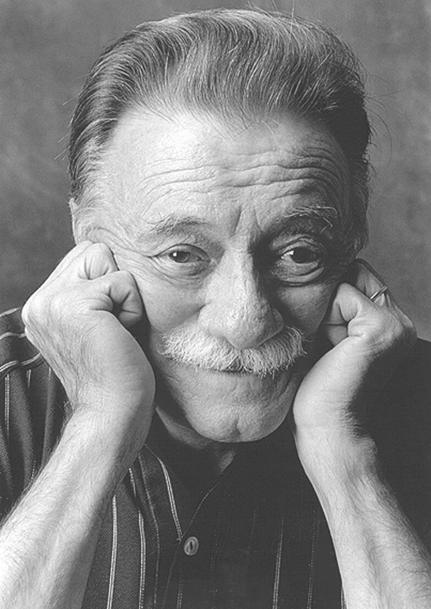

Es mi deceo que puedas volar con alas de letras, que te refugies en versos y sueñes despierto, que deleites tus sentidos y alcances la paz, que solo un buen poema te puede brindar
Poema 1
Pablo Neruda
Haz click aqui para conocer Su historia
Cuántas veces, amor, te amé sin verte y tal vez sin recuerdo, sin reconocer tu mirada, sin mirarte, centaura, en regiones contrarias, en un mediodía quemante: eras sólo el aroma de los cereales que amo
Tal vez te vi, te supuse al pasar levantando una copa en Angola, a la luz de la luna de Junio, o eras tú la cintura de aquella guitarra que toqué en las tinieblas y sonó como el mar desmedido. Te amé sin que yo lo supiera, y busqué tu memoria.
En las casas vacías entré con linterna a robar tu retrato. Pero yo ya sabía cómo era. De pronto mientras ibas conmigo te toqué y se detuvo mi vida: frente a mis ojos estabas, reinándome, y reinas. Como hoguera en los bosques el fuego es tu reino.
Un poema que trata del recuerdo del amor, un amor que, posiblemente, no sea correspondido. Se puede seguir amando a pesar del tiempo y la distancia, se puede estar enamorado sin ver, sólo con los recuerdos y la esperanza. Es la fuerza del corazón.
Poema 2
Mario Benedetti
Hagamos un trato
Compañera usted sabe que puede contar conmigo no hasta dos o hasta diez sino contar conmigo si alguna vez advierte que la miro a los ojos y una veta de amor reconoce en los míos no alerte sus fusiles ni piense qué delirio a pesar de la veta o tal vez porque existe usted puede contar conmigo
si otras veces me encuentra huraño sin motivo no piense qué flojera igual puede contar conmigo
pero hagamos un trato yo quisiera contar con usted es tan lindo saber que usted existe uno se siente vivo y cuando digo esto quiero decir contar aunque sea hasta dos aunque sea hasta cinco no ya para que acuda presurosa en mi auxilio sino para saber a ciencia cierta que usted sabe que puede contar conmigo.
Poema 3
Jairo Anibal Niño

EL DÍA DE TU SANTO
El día de tu santo te hicieron regalos muy valiosos: un perfume extranjero, una sortija, un lapicero de oro, unos patines, unos tenis Nike y una bicicleta. Yo solamente te pude traer,
En una caja antigua de color rapé, un montón de semillas de naranjo, de pino, de cedro, de araucaria, de bellísima, de caobo y de amarillo. Esas semillas son pacientes y esperan su lugar y su tiempo.
Yo no tenía dinero para comprarte algo lujoso. Yo simplemente quise regalarte un bosque